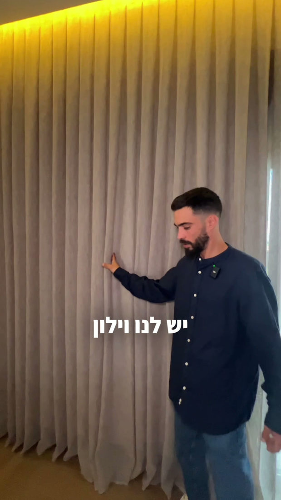
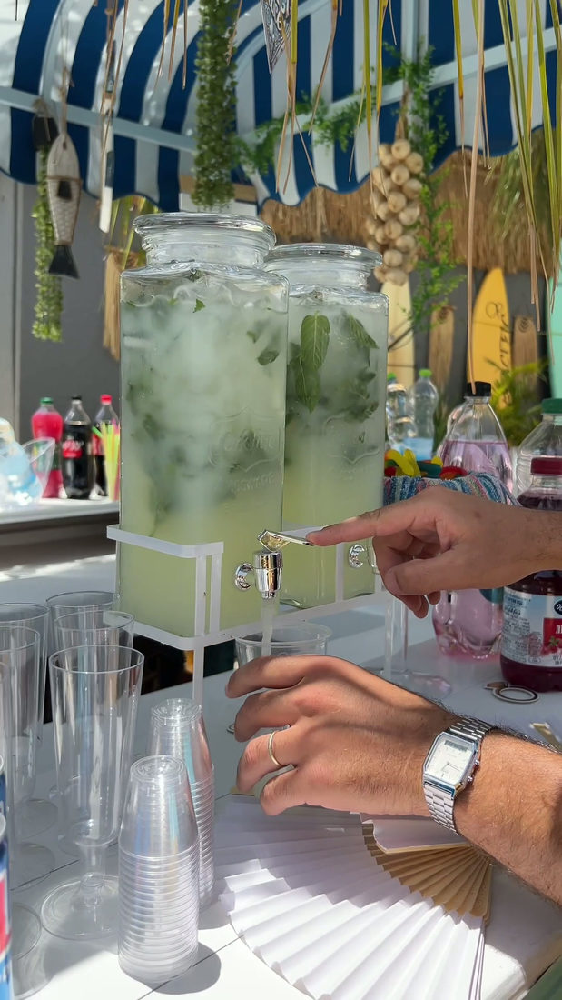
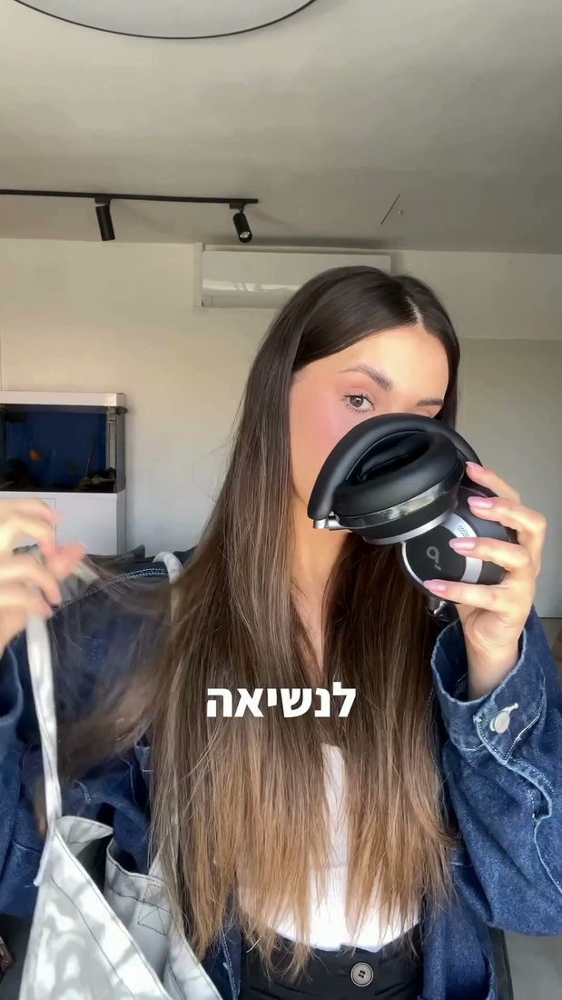

איך להיות יוצרת UGC: מדריך צעד אחר צעד למתחילות
איך להיות יוצרת UGC מאפס? 7 צעדים מעשיים: בחירת נישה, סרטוני הדגמה, תיק עבודות, פנייה למותגים ותמחור. מדריך של עדן רוסק.
לקריאת המדריך ←כל הידע, השיטות והמדריכים הפרקטיים להצלחה בעולם יצירת התוכן, ה-UGC וניהול הרשתות החברתיות בישראל.

איך להיות יוצרת UGC מאפס? 7 צעדים מעשיים: בחירת נישה, סרטוני הדגמה, תיק עבודות, פנייה למותגים ותמחור. מדריך של עדן רוסק.
לקריאת המדריך ←
אפשר לעבוד ב-UGC בלי עוקבים? כן. למה מותגים לא מסתכלים על כמות העוקבים, מה כן חשוב להם ואיך מתחילות עם עמוד קטן. עדן רוסק מסבירה.
לקריאת המדריך ←איך לפנות למותגים כיוצרת UGC ולקבל תשובה? מבנה הודעה שעובד, תבנית מוכנה במייל ובאינסטגרם, איך עושים פולואפ ואילו טעויות לא לעשות.
לקריאת המדריך ←
אילו סרטוני UGC מותגים קונים? 8 פורמטים מנצחים: ביקורת כנה, אנבוקסינג, לפני ואחרי, בעיה ופתרון, הדרכה ועוד, ואיך מצלמים כל אחד מהנייד.
לקריאת המדריך ←מדריך ליצירת תוכן מהטלפון: הגדרות מצלמה, תאורה טבעית, סאונד, זוויות, עריכה ב-CapCut ותכנון שבועי. כל מה שצריך כדי שהסרטונים ייראו מקצועיים.
לקריאת המדריך ←
מה זה הוק ואיך כותבים הוק שעוצר גלילה? 4 סוגי הוקים שעובדים, דוגמאות בעברית, הוק ויזואלי, וטעויות שמורידות צפיות. מדריך של עדן רוסק.
לקריאת המדריך ←
איך עורכים סרטונים ב-CapCut? חיתוך, כתוביות אוטומטיות בעברית, מוזיקה, מעברים, יחס מסך וייצוא באיכות גבוהה. מדריך פשוט למתחילות.
לקריאת המדריך ←
איך בונים מיתוג אישי ונראות בסושיאל? שפה ויזואלית, ביו שמוכר, עמודי תוכן, סטוריטלינג ועקביות. מדריך של עדן רוסק לבעלות עסקים ויוצרות.
לקריאת המדריך ←
איך עובד עולם ה-UGC בישראל, למה מותגים משלמים מאות ואלפי שקלים לסרטון גם למי שאין לה עוקבים, ואיך מתחילים מאפס.
לקריאת המדריך המלא ←
מה באמת חייב לכלול קורס יצירת תוכן עדכני? מפיצוח הוקים ואלגוריתם ועד עריכה מקצועית ב-CapCut ושימוש בכלי AI.
לקריאת המדריך המלא ←
מה עושה מנהלת סושיאל בשנת 2026, אילו מיומנויות מבדילות בין חובבנית למקצוענית, ואיך בונים ריטיינרים יציבים מול עסקים.
לקריאת המדריך המלא ←כל מה שקורה מאחורי הקלעים של סדנת יצירת תוכן פרונטלית: תרגול צילום בזמן אמת, עריכה מעשית ויציאה עם סרטונים מוכנים ביד.
לקריאת המדריך המלא ←
איך לבנות Media Kit שמותגים לא יכולים להתעלם ממנו, כמה גובים על סרטון בודד או חבילת סרטונים, ואיך עוברים מעסקאות בארטר לתשלום מלא.
לקריאת המדריך המלא ←הצטרפי לאקדמיה הדיגיטלית או שרייני מקום בסדנה הפרונטלית הקרובה וنتחיל ליצור תוכן שמביא תוצאות.